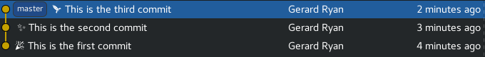
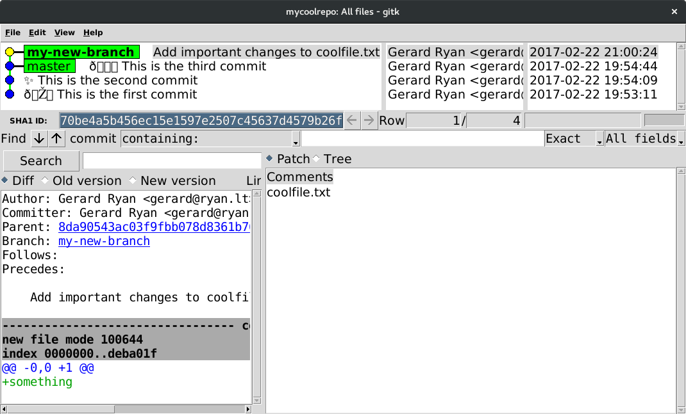
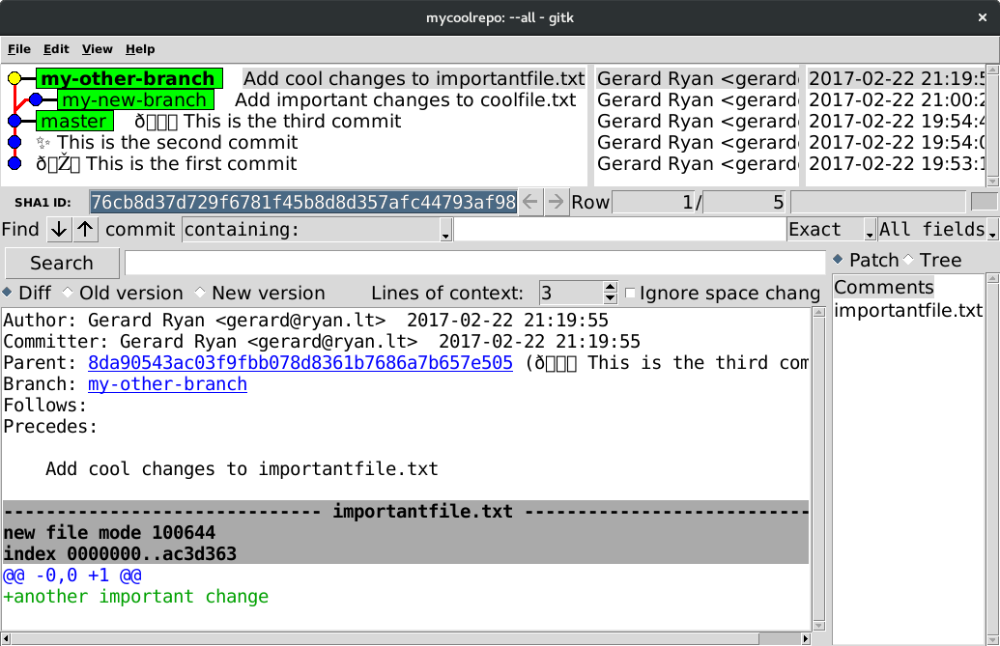
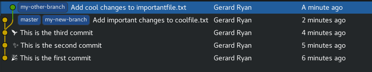
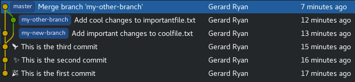

Objectives
Introducing the fundamentals of git using the command line
Why use a version control system (such as Git)?
You can keep track of the changes you make to your project as you work on it (like 'save points' in a computer game, you can go back to previous states)
If you're working on the same project as other people, it helps you handle the synchronization (friction?) points when you make changes
Why use Git specifically?
It's the most popular (the default?), and it strikes a good balance between being easy to use, and being powerful
It's decentralized, so you can do everything offline, and don't need to configure any server
It makes it easy to try new things locally without having to worry about breaking everything, or losing stuff
What we'll cover
- Commits - What they are and how to create them
- Branches - Why they are needed and how to work with them
- Merging - What it is and the most common types of merging
- Conflicts - Handling merge conflicts and minimizing the chances of hitting them
Commits
A commit is a snapshot of a project at a specific point in time. Think of it as a 'save point' in a video game. If you mess up your project you can go back to a working commit.
Practical One
Create a new repository
Before we create our first commit, we'll need to create a repository.
Create a new directory.
mkdir git-workshop
cd git-workshopInitialize a git repository, we will see a hidden .git directory created in
the current directory. Let's not focus on that too much at the moment.
git init
# stdout: Initialized empty Git repository in...
ls -a
# stdout: . .. .gitCreate a commit
We have our repository created. Let's create a new file with some text inside it.
echo 'Hello, World!' >> hello.txtWe can now add the hello.txt file to the staging area, ready to be committed.
Any future changes to hello.txt will not be included in the commit we create,
unless we add them too.
git add hello.txtFinally we can create a commit using the contents of the staging area, and include a descriptive message of our changes.
# Alternatively we can just do 'git commit', which will open up an editor to
# enter the commit message.
git commit -m "Add hello.txt"We have created a commit, now let's create another one by making some changes
to hello.txt. We'll leave this one to you, but our change could look
something like:
echo ' My name is <your-name>!' >> hello.txtViewing commit history
We have two commits created, let's take a look at the commit log.
git logThe commits are ordered in reverse chronological order. Each commit item contains the SHA-1 hash of the commit, the author, the date the commit was authored and the commit message. We can use the SHA-1 hash of the commit to reference it when using other git commands.
For example, we can checkout a commit:
git checkout <commit-sha-1>
cat hello.txt
# stdout: Hello, World!
# Use 'git checkout -' to checkout the previous commit.
git checkout -
cat hello.txt
# stdout: Hello, World! My name is <your-name>Diving deeper
We covered quite a lot in the previous practical. Let's go in depth on some of the topics covered.
Adding (Staging) and Committing
When performing a git add we mentioned the "staging area". This is one of the
three sections of a git project:
The working directory - This is all the files in your current directory. This is where files are modified before being staged.
The staging area - This is where changes are added during
git add, when a commit is created the changes in the staging area will be the contents of the commit.The repository - Changes that have been committed and persisted.

Lifecycle of files
There are two states of a file in git:
Tracked files - This is any file that is in the previous commit, or currently staged.
Untracked files - Any file that is not a tracked file.
A tracked file can be:
Modified: Changes have been made since the previous commit, but are not staged.
Staged: Changes have been made since the previous commit, and those changes are staged.
Unmodified: No changes have been made to the file since the last commit.

Practical Two
Now we know a bit more about staging and the lifecycle of a file, let's have a look at the lifecycle in action.
First, let's create a new untracked file.
echo 'My favourite colour is <your-favourite-colour>!' >> colour.txtNow we want to see the status of the current project.
git statusIt tells us we have an untracked file called 'colour.txt'. As we haven't changed the contents of 'hello.txt' it is unmodified and does not show by default.
If we add 'colour.txt' to the staging area and check the status again we will
see git is now telling us the file is staged or ready to be committed, the file
is now also tracked.
git add colour.txt
git status
# Note that the output also tells us how to unstage the file, using git reset.Now let's change the contents of 'hello.txt', the file will then become
modified and this will be shown when running git status.
echo ' I am doing a Git workshop!' >> hello.txt
git statusFinally add and commit all of the changes.
Branches and branching
What are branches?
Git is a Source Control Management (SCM) tool that helps manage the different states that some source content (often software source code) over time. Each commit is a different state, and we usually visualize these as a graph over time:

In the above image, we can see that:
- newer commits are visualized on top of the older ones
- On the very top (newest) commit, there's a blue box that says "master".
- We say master is the branch that is currently "checked out".
masteris the default branch that is created when you create or clone a repository.
There are different Git visualization tools available for different
computer operating systems. Usually there's one called gitk that
comes installed with Git. Try executing gitk on the command line to
see the current branch (or gitk --all to visualize all branches and
commits).
Create a new local repository
For the purposes of this lab, we're going to create a new local repository:
Open a shell (a Git Shell on Windows, or a regular Terminal on macOS/Linux), and create a new directory by running:
$ mkdir topic05Navigate into the topic05 directory:
$ cd topic05Now initialise a Git repository from this empty directory:
$ git init
Initialized empty Git repository in C:/Users/username/topic05/.git/Add a README.md file to the repo and commit it:
echo "Hello" >> README.md
git add README.md
git commit -m "Adding a README"Working with branches
Using the Git command line tool, you can get a list of all of your branches:
$ git branch
* masterYou can create a new branch at the same point (commit) as the current branch:
$ git branch my-new-branchLooking at the list of branches though, we can see that we're still on the master branch (the asterisk highlights the current branch):
$ git branch
* master
my-new-branchAfter creating a branch, we then need to checkout that branch to switch to it:
$ git checkout my-new-branch
Switched to branch 'my-new-branch'Listing the branches again, we can see that we're now on the new
branch. Some other commands such as git status will give
information about the current branch.
On the new branch, make a new change, and commit it.
$ echo "something" >> coolfile.txt
$ git add coolfile.txt
$ git commit -m "Add important changes to coolfile.txt"
[my-new-branch 70be4a5] Add important changes to coolfile.txt
1 file changed, 1 insertion(+)
create mode 100644 coolfile.txtIn gitk now, we can see that the new branch now represents a
different state than the master branch:

You can create a branch starting from any place, not just the
currently checked-out branch, by specifing that other location to the
git branch command that we used earlier. For example, we could
create a new branch from master as follows:
$ git branch my-other-branch masterLet's instead use the following to create and checkout the new branch in one go:
$ git checkout -b my-other-branch master
Switched to a new branch 'my-other-branch'Again, create a new change on this branch (to a different file this time), and commit it:
$ echo "another important change" >> importantfile.txt
$ git add importantfile.txt
$ git commit -m "Add cool changes to importantfile.txt"
[my-other-branch 76cb8d3] Add cool changes to importantfile.txt
1 file changed, 1 insertion(+)
create mode 100644 importantfile.txtVisualizing now with gitk --all, we should see our master branch,
and the two new branches coming out of it in different directions:

You can delete a branch like this (just an example, no need to run this):
$ git branch -d some-other-branch
error: The branch 'some-other-branch' is not fully merged.
If you are sure you want to delete it, run 'git branch -D some-other-branch'.Since in this case, there are changes on some-other-branch that don't
exist anywhere else, we got an error message telling us that if we
really want to delete it, we need to use -D instead of -d.
What are branches really though?
A branch is simply a reference to a commit. Remember the first picture in this section? We saw a visualization of a graph of commits, with a blue box containing the name of the branch (master).
In each repository, there's a hidden directory named .git, this is
the guts of the repository. In there, there is a file at
.git/refs/heads/master which contains nothing but the sha1 hash of
the commit that the branch is pointing at.
What is HEAD?
HEAD is a special pointer that points to "whatever is currently
checked out". If you're on a particular branch, it will contain a
reference to that branch:
$ cat .git/HEAD
ref: refs/heads/masterMerging
What does merging mean?
In the last section, we learned about creating new branches. Often branches are created temporarily to work on a specific piece of work. When that work is ready, then those changes are brought back into the original branch again.
Remember the branches from the last section? Originally there was the
master branch, and then we created a branch called my-new-branch,
where we made changes. We can now merge those changes back into
master branch, and delete the my-new-branch since we won't need it
any longer.
The simplest form of merging is fast-forward merging. Since branches
are just references to commits, and my-new-branch is a direct
descendant of the master branch; we can just update the master
branch to point to the same commit as my-new-branch.
This is the default way that Git will merge when the target branch is
an ancestor of the source branch. First, checkout the target branch
(master in this case), and then use the merge subcommand to bring
the changes from the source branch (my-new-branch) into this
branch:
$ git checkout master
Switched to branch 'master'
$ git merge my-new-branch
Updating 22ba038..fa8df7e
Fast-forward
coolfile.txt | 1 +
1 file changed, 1 insertion(+)
create mode 100644 coolfile.txtNow we can delete the my-new-branch, since we've incorporated all
the changes into master:
$ git branch -d my-new-branch
Deleted branch my-new-branch (was c1e11ad).Merge commits
In some cases, the target branch will not be a direct ancestor of the source branch. Here, the default action is to create a new commit which has two (or more) parent commits and a message.

While on the master branch, we can now merge the changes from the other branch as follows:
$ git merge my-other-branch
Merge made by the 'recursive' strategy.
importantfile.txt | 1 +
1 file changed, 1 insertion(+)
create mode 100644 importantfile.txtThe default commit message editor will have appeared here, to give you the opportunity to modify the commit message for the new commit. The default is usually fine.

Usually a merge commit will not contain any changes to files itself: the changes will be in its ancestors. Sometimes when merging two divergent branches though, there will be conflicting changes on either side of the merge. In this case, there may be changes needed in the merge commit to resolve the conflicts. We'll talk about conflicts later.
Conflict resolution
What are conflicts, and how do they happen?
Conflicts in Git occur when trying to integrate changes from two different states, where different changes are made in one place. The most common case is when performing a merge of one branch into another, where there's a change to a particular line in a particular file on both sides of the merge.
Git doesn't know what to do automatically, so it just stops in the middle of the action, and asks you to intervene.
Let's cause a conflict
First, let's make a new branch and add a file:
$ git status # Check that we've checked out master
$ git checkout -b the-left
Switched to a new branch 'the-left'
$ echo "Left is the best" >> importantfile.txt
$ git add importantfile.txt
$ git commit -m "Left is the best"
[the-left 511709c] Left is the best
1 file changed, 1 insertion(+)
create mode 100644 importantfile.txtNext, for the purposes of demonstration, let's create another branch,
called the-right:
# Checkout a new branch, `the-right`, from `master`
git checkout -b the-right master
Switched to a new branch 'the-right'
$ echo "Right is the best" >> importantfile.txt
$ git add importantfile.txt
$ git commit -m "Right is the best"
[the-right 511709c] Right is the best
1 file changed, 1 insertion(+)
create mode 100644 importantfile.txtWe've made changes here in the same file, in two separate
branches. If we try to integrate these branches with a merge,
we're going to see a conflict. Let's merge the-left into
the-right to see a conflict:
# Run `git status` - we should be on the `the-right` branch
$ git merge the-left
Auto-merging importantfile.txt
CONFLICT (add/add): Merge conflict in importantfile.txt
Automatic merge failed; fix conflicts and then commit the result.We've now got a conflict that we need to resolve before we can merge. Check the status of our repo:
$ git status
On branch the-right
You have unmerged paths.
(fix conflicts and run "git commit")
(use "git merge --abort" to abort the merge)
Unmerged paths:
(use "git add <file>..." to mark resolution)
both modified: importantfile.txt
no changes added to commit (use "git add" and/or "git commit -a")Inspect the diff between these conflicting files:
$ git diffdiff --cc importantfile.txt
index 91fe0e5,e188c8f..0000000
--- a/importantfile.txt
+++ b/importantfile.txt
@@@ -1,2 -1,2 +1,6 @@@
another important change
++<<<<<<< HEAD
+Right is the best
++=======
+ Left is the best
++>>>>>>> the-leftHow to resolve conflicts
We've got a conflict in importantfile.txt. Open this in an
editor and let's walk through how to resolve this conflict.
another important change
<<<<<<< HEAD
Right is the best
=======
Left is the best
>>>>>>> the-leftWe want to resolve the conflict so that we end up with an integrated change like the following:
another important change
Right and Left are both equally goodWith our conflict manually resolved, we need to git add:
# Stage our change and mark conflict as resolved
git add importantfile.txtLets check our git status once more:
$ git status
On branch the-right
All conflicts fixed but you are still merging.
(use "git commit" to conclude merge)
Changes to be committed:
modified: importantfile.txtFinally, commit the integrated change:
$ git commit
# Will prompt for an $EDITOR message
[the-right d87d6f5] Merge branch 'the-left' into the-rightCan I just abort and go back to where I was before?
Yes, you can - the git status command we ran earlier tells us what
to do (git merge --abort)
How to minimize the chances of conflicts
Try to keep commits small & integrate your changes often.